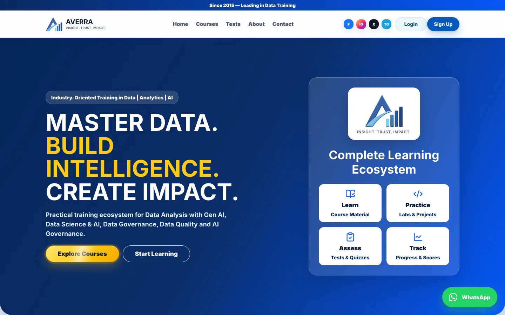
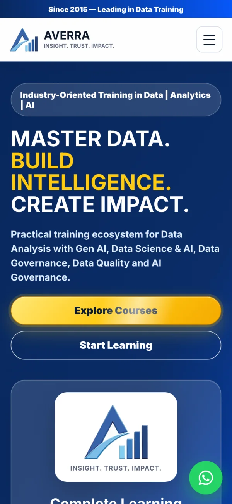
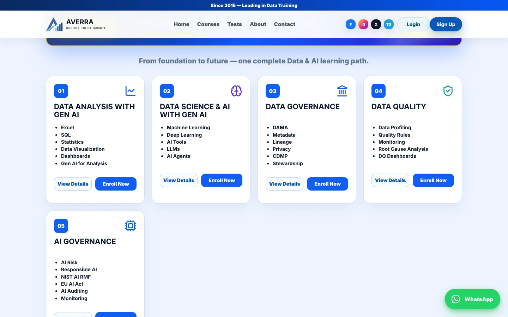

Averra Data
A production learning and assessment platform built for a data analytics academy — combining course discovery, student accounts, timed exams, counseling requests, and admin operations on one live product.
Built under a private engagement. The source is not public, so this page covers the build and the decisions behind it rather than the code.
- Role
- Full-stack Developer
- Ownership
- End-to-end delivery
- Scope
- Course catalogue + assessment platform
- Delivery
- Live production site



Screenshots of the public site. The authenticated assessment and admin workflows are not shown.
The Challenge
Averra Data is a data analytics academy that needed to move from a brochure presence to a product that could support course discovery, counseling, student access, and assessments. I built the public experience and the application workflows as one Next.js App Router codebase, backed by Supabase and deployed to Vercel.
The academy runs tracks across data analysis, data science, data governance, data quality, and AI governance, each with detailed curriculum and search requirements. The platform also needed timed exam sessions, reusable question imports, role-aware administration, and a practical way to capture counseling requests.
My Role
I owned the full build: translating the academy's requirements into the product structure, TypeScript interfaces, Supabase data model, authentication and assessment flows, admin workspace, deployment, domain setup, and search groundwork.
What I Delivered
- Course discovery: Five detailed learning tracks with curriculum routes, related-course navigation, FAQs, counseling calls to action, and structured metadata.
- Student accounts: Email and password authentication through Supabase Auth, with profile records and student/admin roles.
- Timed assessments: Exam sessions with countdowns, locally preserved drafts, automatic submission, attempt history, scoring, and answer-level results.
- Admin workspace: Session creation, result dashboards, question-bank previews, and bulk CSV or Excel imports for instructors.
- Counseling workflow: Guided chat and voice booking flows that collect learner goals and save requests for the admin team.
- Discovery and delivery: Route-level metadata, JSON-LD, sitemap and robots generation, Vercel deployment, analytics, and a custom domain.
Key Decisions
One typed application for the public and authenticated product. Next.js App Router keeps marketing pages, course routes, API handlers, exam workflows, and the admin workspace in one TypeScript codebase.
Supabase for authentication and relational state. PostgreSQL stores profiles, exam sessions, questions, attempts, and answers, while row-level security separates student access from admin operations.
CSV and Excel imports for question banks. Instructors can prepare assessment content in familiar spreadsheets, validate it in the browser, and create a timed session without entering every question manually.
Serverless deployment. The site runs on Vercel, which keeps hosting cost near zero at the academy's traffic level while still handling enrolment-season spikes.
Outcome
The academy now has one live platform for course discovery, counseling requests, authenticated assessments, and admin operations. Students can take and revisit timed exams, while staff can create sessions, import questions, and review results from the same product.
Tech Stack
- Application: Next.js App Router, React, TypeScript
- Data and auth: Supabase Auth, PostgreSQL, row-level security
- Assessment tooling: Papa Parse, SheetJS, Zod
- Interface: Custom CSS, Lucide React, view transitions
- Booking: Next.js route handlers, Supabase, Vapi Web SDK
- Hosting: Vercel, custom domain